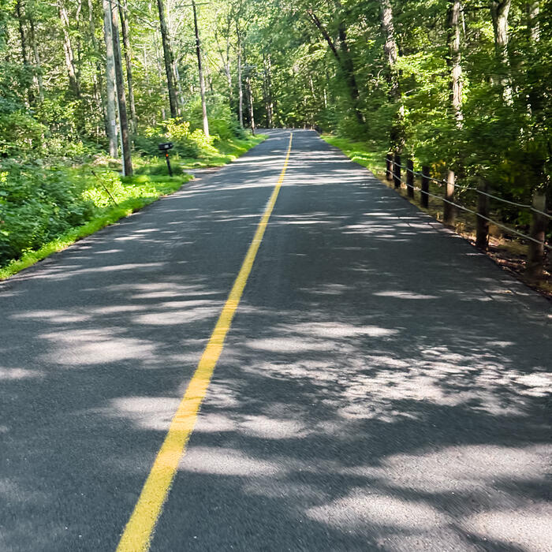
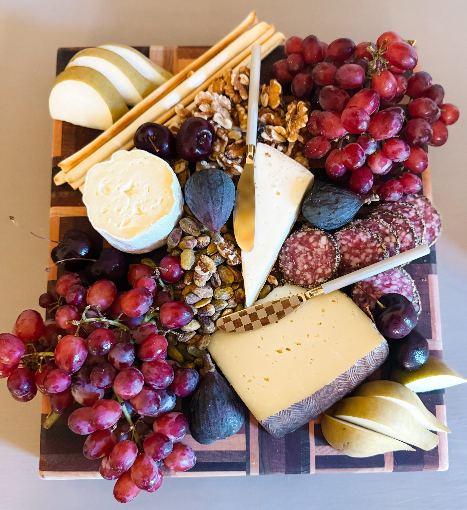
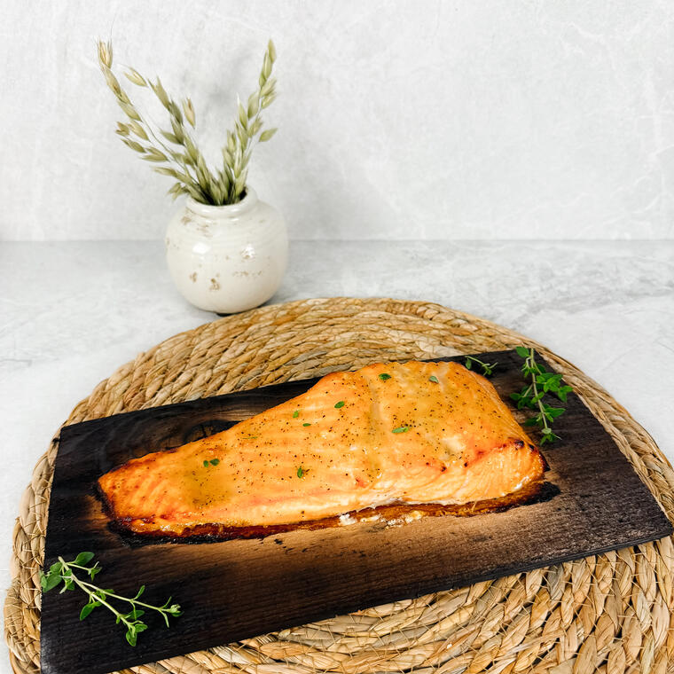
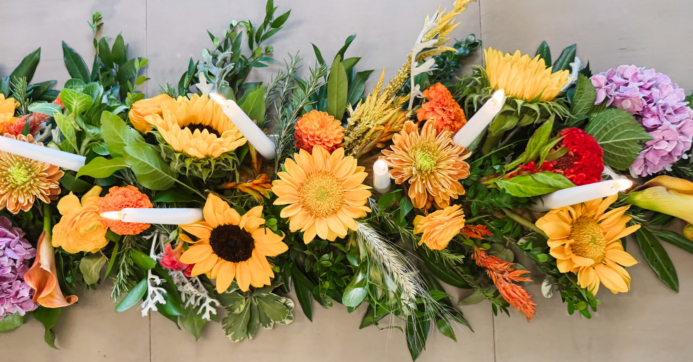

Letter no. 16 · Summer
Out Before the Cars
People always talk about how quiet the mornings are. I don’t think they are. The difference isn’t that it’s quiet — it’s that there aren’t many cars yet.
Read the letter→She’s the Goose
October · Gathering
Figs, late grapes, the good cheese unwrapped an hour early. A board like this one is less about cooking than about deciding an ordinary Thursday is worth stopping for — and then setting the table as though you meant it.
Set the table→Photographed at home. Black figs, red grapes, pears, walnuts and salami on a checkered board.

The journal of She’s the Goose
The Quiet Ledger
A record of ordinary moments, kept on purpose.
One letter each week, written slowly.

Letter no. 16 · Summer
People always talk about how quiet the mornings are. I don’t think they are. The difference isn’t that it’s quiet — it’s that there aren’t many cars yet.
Read the letter→Letter no. 15 · Summer
The Sound is only a few miles from the house. We don’t really plan to go.

Letter no. 14 · Summer
The cedar plank sits in the sink for about an hour before dinner. It always wants to float, so I put a bowl on top of it and leave it alone.

Sunflowers, spider mums, marigolds, celosia and wheat, laid straight down the table with the tapers set in among them.
From the kitchen
Curated
Nothing is listed unless it has lived in this house and earned its place — used, kept, and quietly returned to.
Letters from She’s the Goose
No noise, no selling — just the same quiet, delivered when it’s written.
Thank you — look for a note to confirm.